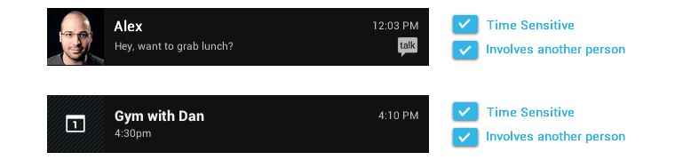
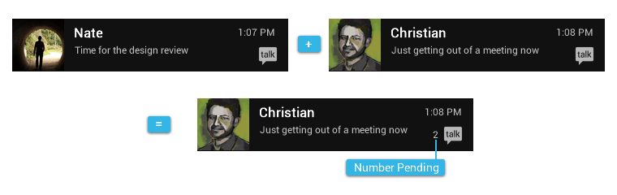

The notification system allows your app to keep the user informed about important events, such as new messages in a chat app or a calendar event.
To create an app that feels streamlined, pleasant, and respectful, it is important to design your notifications carefully. Notifications embody your app's voice, and contribute to your app's personality. Unwanted or unimportant notifications can annoy the user, so use them judiciously.
When to display a notification
To create an application that people love, it's important to recognize that the user's attention and focus is a resource that must be protected. To use an analogy that might resonate with software developers, the user is not a method that can be invoked to return a value. The user's focus is a resource more akin to a thread, and creating a notification momentarily blocks the user thread as they process and then dismiss the interruptive notification.
Android's notification system has been designed to quickly inform users of events while they focus on a task, but it is nonetheless still important to be conscientious when deciding to create a notification.
While well behaved apps generally only speak when spoken to, there are some limited cases where an app actually should interrupt the user with an unprompted notification.
Notifications should be used primarily for time sensitive events, and especially if these synchronous events involve other people. For instance, an incoming chat is a real time and synchronous form of communication: there is another user actively waiting on you to respond. Calendar events are another good example of when to use a notification and grab the user's attention, because the event is imminent, and calendar events often involve other people.
When not to display a notification
There are however many other cases where notifications should not be used:
-
Don't notify the user of information that is not directed specifically at them, or information that is not truly time sensitive. For instance the asynchronous and undirected updates flowing through a social network do not warrant a real time interruption.
-
Don't create a notification if the relevant new information is currently on screen. Instead, use the UI of the application itself to notify the user of new information directly in context. For instance, a chat application should not create system notifications while the user is actively chatting with another user.
-
Don't interrupt the user for low level technical operations, like saving or syncing information, or updating an application, if it is possible for the system to simply take care of itself without involving the user.
-
Don't interrupt the user to inform them of an error if it is possible for the application to quickly recover from the error on its own without the user taking any action.
-
Don't use notifications for services that the user cannot manually start or stop.
-
Don't create superfluous notifications just to get your brand in front of users. Such notifications will only frustrate and likely alienate your audience. The best way to provide the user with a small amount of updated information and to keep them engaged with your application is to develop a widget that they can choose to place on their home screen.

Design Guidelines
Make it personal
For notifications of items sent by another user (such as a message or status update), include that person's image.
Remember to include the app icon as a secondary icon in the notification, so that the user can still identify which app posted it.
Navigate to the right place
When the user touches a notification, be open your app to the place where the user can consume and act upon the data referenced in the notification. In most cases this will be the detail view of a single data item (e.g. a message), but it might also be a summary view if the notification is stacked (see Stacked notifications below) and references multiple items. If in any of those cases the user is taken to a hierarchy level below your app's top-level, insert navigation into your app's back stack to allow them to navigate to your app's top level using the system back key. For more information, see the chapter on System-to-app navigation in the Navigation design pattern.
Timestamps for time sensitive events
By default, standard Android notifications include a timestamp in the upper right corner. Consider whether the timestamp is valuable in the context of your notification. If the timestamp is not valuable, consider if the event is important enough to warrant grabbing the user's attention with a notification. If the notification is important enough, decide if you would like to opt out of displaying the timestamp.
Include a timestamp if the user likely needs to know how long ago the notification occurred. Good candidates for timestamps include communication notifications (email, messaging, chat, voicemail) where the user may need the timestamp information to understand the context of a message or to tailor a response.
Stack your notifications
If your app creates a notification while another of the same type is still pending, avoid creating an altogether new notification object. Instead, stack the notification.
A stacked notification builds a summary description and allows the user to understand how many notifications of a particular kind are pending.
Don't:

Do:
If you keep the summary and detail information on different screens, a stacked notification may need to open to a different place in the app than a single notification.
For example, a single email notification should always open to the content of the email, whereas a stacked email notification opens to the Inbox view.
Clean up after yourself
Just like calendar events, some notifications alert the user to an event that happens at a particular point in time. After that moment has passed, the notification is likely not important to the user anymore, and you should consider removing it automatically. The same is true for active chat conversations or voicemail messages the user has listened to, users should not have to manually dismiss notifications independently from taking action on them.
Provide a peek into your notification
You can provide a short preview of your notification's content by providing optional ticker text. The ticker text is shown for a short amount of time when the notification enters the system and then hides automatically.
Make notifications optional
Users should always be in control of notifications. Allow the user to silence the notifications from your app by adding a notification settings item to your application settings.
Use distinct icons
By glancing at the notification area, the user should be able to discern what notification types are currently pending.
Do:
- Look at the notification icons the Android apps already provide and create notification icons for your app that are sufficiently distinct in appearance.
Don't:
- Use color to distinguish your app from others. Notification icons should generally be monochrome.
Interacting With Notifications
Notifications are indicated by icons in the notification area and can be accessed by opening the notification drawer.
Inside the drawer, notifications are chronologically sorted with the latest one on top. Touching a notification opens the associated app to detailed content matching the notification. Swiping left or right on a notification removes it from the drawer.
On tablets, the notification area is integrated with the system bar at the bottom of the screen. The notification drawer is opened by touching anywhere inside the notification area.

Ongoing notifications
Ongoing notifications keep users informed about an ongoing process in the background. For example, music players announce the currently playing track in the notification system and continue to do so until the user stops the playback. They can also be used to show the user feedback for longer tasks like downloading a file, or encoding a video. Ongoing notifications cannot be manually removed from the notification drawer.
Dialogs and toasts are for feedback not notification
Your app should not create a dialog or toast if it is not currently on screen. Dialogs and Toasts should only be displayed as the immediate response to the user taking an action inside of your app. For instance, dialogs can be used to confirm that the user understands the severity of an action, and toasts can echo back that an action has been successfully taken.